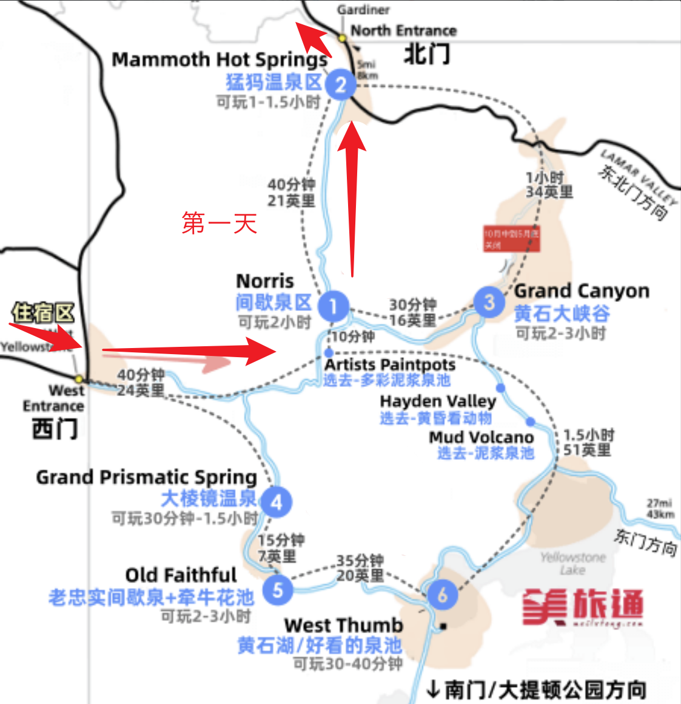
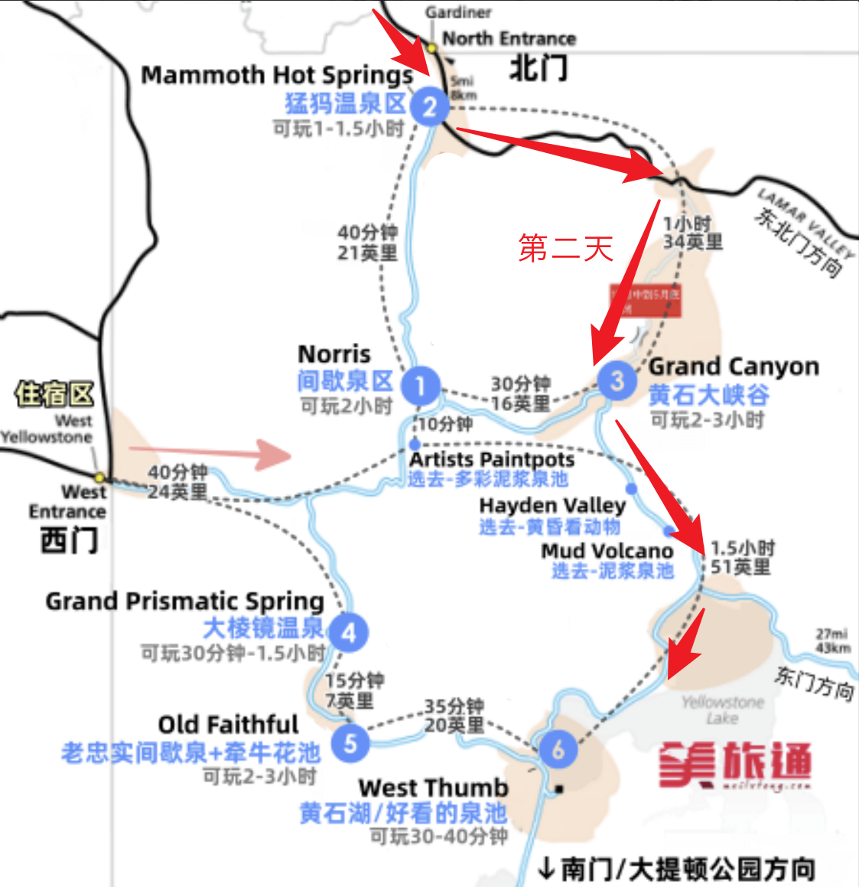
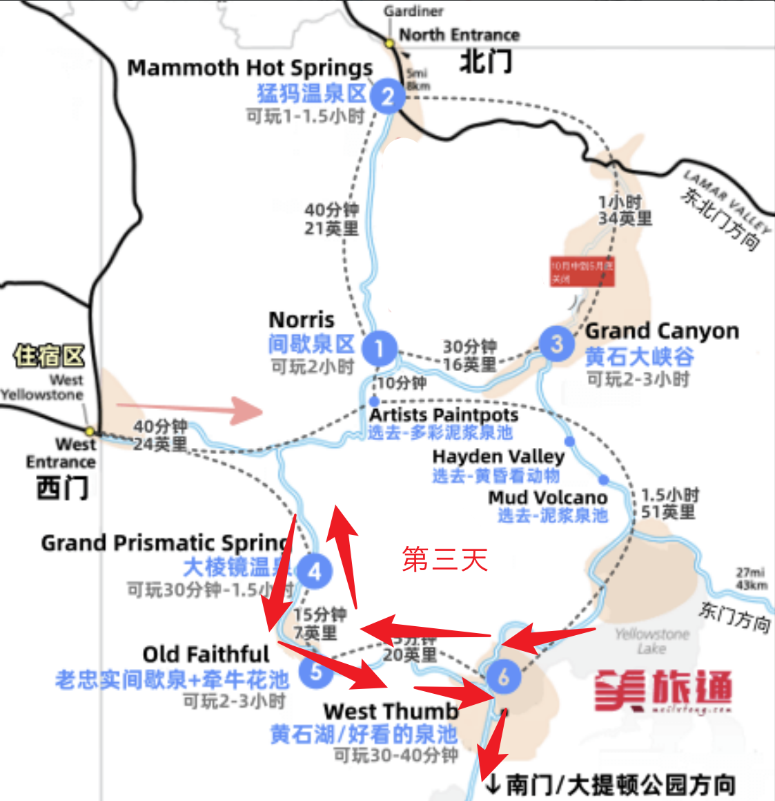
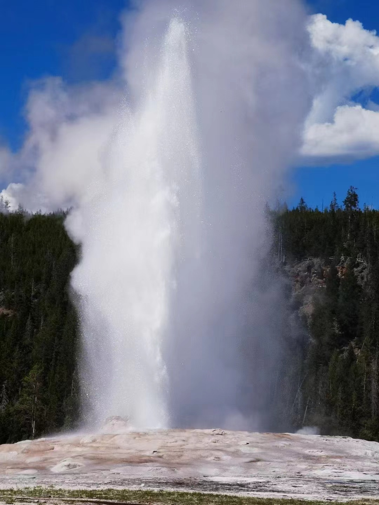
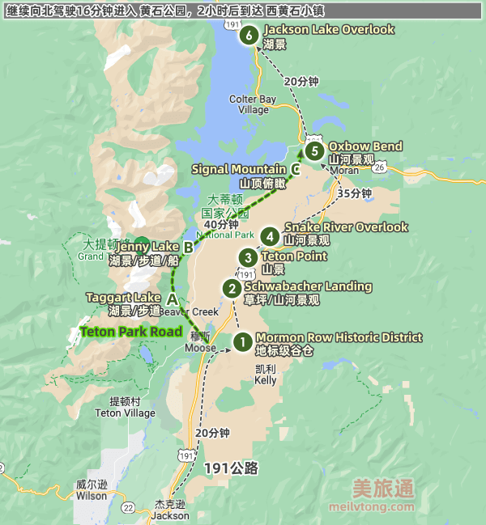

黄石国家公园
地图：Yellowstone National Park Area Maps
门票：可提前订购，35美元一车，七日通票 Fees & Passes
住宿：
1，园区内小木屋，价格300-500一个晚上一间
Xanterra (yellowstonenationalparklodges.com)
2，露营，几十刀左右
Camping - Yellowstone National Park
Xanterra (yellowstonenationalparklodges.com)
3，west yellowstone西黄石小镇
在西门外
第一天
【下午约2，3点】飞机到达
盐湖城，salt lake city international airport
落地租车，恰午饭，租睡袋（或者去黄石租睡袋）
开车5h到西黄石住宿的地方
超市购置基本物品啥的（盐湖城还是西黄石？）
晚上住在西黄石小镇（或者下午直接进黄石，露营，需要注意黄石最晚入园时间？）
攻略：黄石国家公园攻略 Yellowstone (meilvtong.com)
第二天
【9：00】西门进
开车40min
【10：00-12：00】Norris Geyser Basin
车上吃午饭，30min
在清晨可以看到仙气飘飘的Norris Geyser Basin。清晨的低气温与滚滚热泉的交汇，才酝酿出诺里斯盆地的仙气袅袅。但等大太阳出来之后，仙气就会随之消散。
【4：00-6：00】Mammoth Hot springs 因为洪水，暂时无了

看鹿
住宿
晚上睡在北黄石小镇
第三天
北门进，建议早起蹲动物出没，北门很多，据说清晨很多！ 无了，哭死
Tower falls
Grand Canyon

艺术家点 Artist Point
和大峡谷拍照的最佳地点。在上方观景台从左右两个方向观赏峡谷，有一定概率看到额鹗、乌鸦和燕子。

brink of upper fall
0.3mile的trail，8分钟，有一定概率看到彩虹。水量惊人，容易被水雾糊一脸
通往上瀑布的路很好走，您可以到达两个观景台。上瀑布的落差是 109 英尺 (33 米) ，水流从突出的火山岩上倾泻而下。在瀑布的上游，您可以看到老峡谷大桥 (Canyon Bridge) ，如今构成北缘步行道 (North Rim Trail) 的一部分。从左侧观景台俯瞰下游，可以看到峡谷对面的水晶瀑布 (Crystal Falls) 。
Uncle Tom’s Trail
观景点，近距离看瀑布，trail往返0.7mile，约30min，三百多阶长台阶
这条步行道会耗费很多的体力， 有心肺功能障碍或其他健康问题的游人最好不要走。
Brink of the Lower Falls
观景点，近距离看瀑布，trail往返0.8mile，约40min，步道比较陡峭

Lookout Point and Red Rock Point
距离停车场挺近，稍微远一点看瀑布.
Lookout Point：想要看下瀑布（LowerFalls）全景，找到眺望点（LookoutPoint）标牌处的步行道起点，走到分岔时左转。
Red Rock Trail：下方的红岩步行道（RedRockTrail），距离下瀑布的更近，更使人震撼。要从停车场到达这条步行道，可在分岔处右转。该步行道有许多级台阶，在约0.38mile处下降500ft。有一定概率可以看到彩虹

还有一堆的trail，可以参考步道指南或者AllTrails
Hayden Valley
公路旁的一片草地，但在黎明/黄昏时常能看到美洲野牛等动物
mud volcano
可以用40分钟，走0.8英里长的环形步道，观赏形状/颜色不一的泥浆池
泥浆温度约93摄氏度，不建议呼吸道敏感人群前往
住宿（露营，看星星）
BRIDGE BAY CAMPGROUND（没有洗澡的地方，30一车，4号之后有空位）
FISHING BRIDGE RV PARK（可以洗澡，84一车，14号之后有空位）
第四天
早上起来蹲 Yellowstone Lake 的日出
西拇指间歇泉盆地 (West Thumb Geyser Basin)
景区内有大大小小的温泉池若干，用30-40分钟，走环形木质步道观赏

Sapphire Pool
在从 大棱镜 前往 老忠实 的路上，可以在 Biscuit Basin 稍作停留，观赏 Sapphire Pool

牵牛花池Morning Glory
从 老忠实 徒步前往 牵牛花池，往返约需1.5小时，路上还有多个温泉/间歇泉可观赏

老忠实喷泉 (Old Faithful)——60min
每隔约90分钟喷发一次，每次历时约4分钟。
需要提前10-15分钟就去等待，有提前喷发的可能。
要坐在上风向，这样才不会在喷发的时候，被高高充起的雾气遮住视线。
午饭：老忠实旅馆餐厅（Old Faithful Inn Dining Room）
大棱镜温泉 (Grand Prismatic Spring)——60min
近距离看：停车后走木质步道观赏大棱镜，约需10-30分钟（找停车位费时）
看全景：如果想看全景，需要向南驾车5分钟到 Fairy Falls Trailhead 的停车场（车位很少），然后走 Grand Prismatic Overlook Trail 到山上的观景点，往返约需1小时
大棱镜在中午的时候颜色最鲜艳，要等雾气散开拍出来才好看！

回住宿点的时候可以顿老忠实的日落，晚饭也可以那边解决
住宿（露营）
Lewis Lake Campground（没得洗澡，20一车）
GRANT CAMPGROUND（可以洗澡，34一车，11号之后有空位）
第五天
南门出，去大提顿玩一天到半天（我们从北往南走），晚上赶路去盐湖城（或者就地露营）
大提顿有条路关了，不知道影响不影响
攻略：大提顿国家公园攻略
露营：Camping - Grand Teton National Park
第六天
盐湖城玩一天
Utah State Capitol 犹他州议会大厦
大盐湖 The Great Salt Lake：15刀，貌似有臭味
天空之镜 Bonneville Salt Flats State Park：夏天去只能看到干的盐层
Ensign Peak Park：30分钟的小trail，可以爬上去看日落+盐湖城全景
第七天
各回各家
附录
常见动物出没地
- Fishing Bridge: Grizzly bears
- Hayden Valley: Bison, black bears, elk, grizzly bears, wolves
- Lamar Valley: Bison, black bears, bighorn sheep, elk, grizzly bears, mule deer, pronghorn, wolves
- Mammoth Hot Springs: Bison, black bears, elk, mule deer
- Madison: Bison, elk
- North Entrance: Bighorn sheep, bison, elk, pronghorn
- Northeast Entrance: Moose
- Old Faithful: Bison, elk
- South Entrance: Moose
- West Thumb: Elk, moose
动物在Mammoth Hot Springs and the Northeast Entrance
注意事项
1，携带防熊喷雾